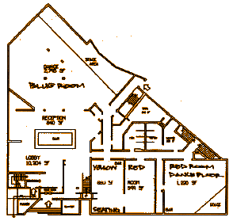

|
denouement
The t-shirts arrived a full two days early.
The party was a smashing success.
We opened the doors at 8:00pm, and there was already a line. Some
Netscape folks were pressed into service handing out raffle tickets and
t-shirts to the guests as they entered; however, they didn't need to do
this for long, because we ran out of both t-shirts and raffle tickets
(a 12-inch roll!) in almost no time.
The band finished their sound check at around 8:15, and we opened that
room; which was good, because we needed the space already! By 9:00, the line
outside was around the block. By 9:30, the club had reached its capacity of
2,000 people, and they had to stop letting people in. They let folks in 20
at a time, each time 20 people exited. I'm told that at one point, the fire
marshall came by and chased away the trailing half of the line outside. By
the end of the evening, at least 3,500 people had passed through the club.
The djs were great, and in answer to the question on the minds of all
of us, yes, (some) nerds can dance. At least, later in the evening.
Earlier in the night, DJ Sage
had a bit of angst about the crowd he was playing to: he had been playing New
Wave and trying to segue into more modern stuff, or at least less
overplayed stuff, but apparently he was having trouble getting away with
anything but the Big Hits of the Eighties: ``I can't believe these
people! If I play anything but, like, Rio, the dance floor clears,
and the security guys come and complain to me because there are too many
bodies in the other room!'' He held up his hard-to-find
Fuzzbox vinyl and shook it at me. ``I'm never going to get to
play this!''
At around 9:30, I ran in to
Marc and
Liz; I tried to talk
him into doing some cage dancing one last time, but he declined. (Earlier in
the week, Liz had said that he would be willing if I could get him a large
snake to dance with; I told her that getting a large snake would not
be a problem, so she'd better not make promises she didn't intend to keep.)

The Kofy Brown Band played two sets, at 10:00 and midnight.
During the second set, who should hop on stage but
Eric Raymond, author of the
technical paper that helped convince Netscape's brass to free the lizard!
Eric brought his flute three thousand miles from Philadelphia to sit in
with the band. The frenzied funkadelic jam session ended with a cheering
crowd, and an invitation for Eric to sit in when the band plays Philly's Five
Spot Club this fall.
At around 10:00, I did the first round of giveaways from the dj booth,
with ``Vana'' duties ably performed by the lovely Mistress Midori
(whose URL I fear I won't be allowed to publish here.) It was quite the
feeding frenzy! I had to whack a few fingers to get them from pulling the
trim off the edge of the dj booth. We tossed out donated software and gifts
from the fine and generous folks at
Netobjects,
Macromedia,
Digital,
Be,
Wired,
and
Unamerican Activities
to eager hands.
(Free software advocates often find themselves having to overcome the
limitations of the English language by explaining that the ``free'' in
``Free Software'' refers to ``free speech'' rather than ``free beer.''
I did my part to confuse the issue by pointing out that while we didn't
have free beer, we did have free software in the free beer sense.)
However, Tara
reports that she didn't need to buy a drink the whole night. Strangers
would come up to her and say, ``You're Tara, right? You like tequila!
Here, drink this!''
One of the giant video screens spent the evening displaying the source
code scrolling by, at varying speeds averaging 60 lines a second. At one
point Brendan walked by, looked up at it, and said, ``That's XFE.
I can't read it, but I recognise the indentation style.''
Were it to display every line of the distributed source, at that speed,
it would have needed to run for seven and a half hours.
I did the second round of giveaways at around 1:00am. The ``Vana''
duties this time were performed by
Tara and
Raven,
tossing the loot from the platform just beneath the cages (the
cages in which
Marca
was notably not dancing.)
First up was a pile of t-shirts that
Paul Phillips
had had made up for his party in Seattle the night before. They pictured
a group of free software mascots (Tux the penguin, the BSD devil,
Wilbur the Gimp, etc) welcoming Mozilla. Cute, but let's face it,
ours were way better.
The final set of giveaways were something special: a dozen CDs of
The Mozilla Source Code, Signature Edition: CD-Rs hand-written
the night before, and signed and numbered by the Netscape Build Team
and myself. These CDs were what the raffle tickets were given out
for. But, it was a bust -- after reading off the
numbers on five tickets and having nobody claim them, I gave up.
``Toss them!'' I shouted, and our Vanas sailed the CDs out
over the crowd. You should have seen the feeding frenzy this time!
After the giveaways, we played the
RMS Free Software Song,
Techno Remix, by Matt Loper. Sadly, I don't think anyone
noticed what it was...
My hosting duties done, I was finally able to relax and enjoy the
party. And a fine, fine party it was, if I do say so myself.
Have you an interesting story from the party? Let
me
know!
|
![[ mozilla.org ]](mozilla.gif)